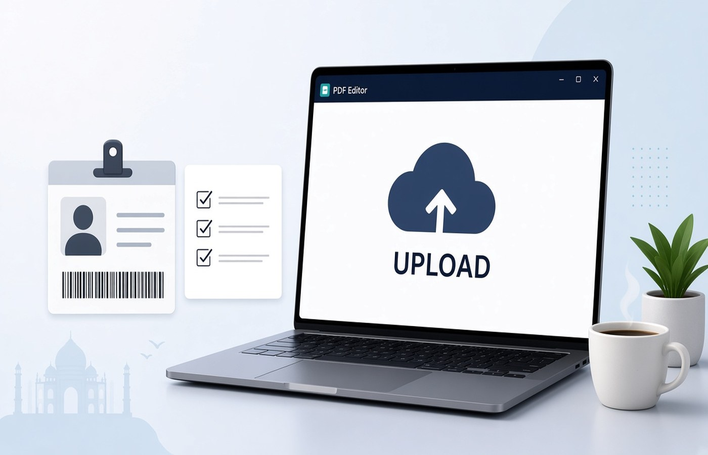

KYC uploads fail in small ways: the pages are in the wrong order, a blank sheet sits in the middle, the file name is scan.pdf, or the size is over the slot limit you only noticed at the door. A ten-minute check on Windows the morning of the upload avoids a second visit. Walk the file in order, drop blanks, set a plain name, confirm the size, and keep a local copy after the site accepts it. Use documents you are allowed to submit on that official form. Do not add pages you were not asked for, and do not edit a name or a number to force a match.
Order matches the form
Open the KYC instruction and list the slots, or the order inside the one slot, on a piece of paper. Then open your PDF and check page one against the first item. Identity, address, and a photo are often separate uploads. Do not merge them because it feels simpler, unless that form has a single box that lists a sequence. If there is a sequence, follow it exactly. Reviewers compare the list to the pages. A correct document in the wrong place looks like a missing document.
Read the name on each page against the name you typed in the form. If they differ, stop and use the correction route the institution provides. Do not cover the printed name. Check dates the form cares about, such as a bill not older than the stated months. An expired page should be replaced with a fresh proof you are allowed to use, not with a date typed on the old scan.
- Page order follows the form text
- Separate slots stay separate
- Name on the PDF matches the form
- No expired page with a typed new date
No blank pages in the middle
Click through every page. A blank back from a duplex scan, or a dark frame where a photo failed, will look like a broken upload. Remove those pages and save. Count the pages you expect and compare with the PDF page count. If you expected four and you have five, find the extra before you upload. If you expected four and you have three, find the missing proof. Do not add a blank to make a count. A blank fixes nothing.
Look for a sideways page in the same pass. A form can reject orientation even when the morning rush is about size. Rotate that page and export again. This pass is also when you notice a second person's document that was scanned in the same batch. Take it out. KYC files get copied into records. The wrong page is hard to recall later. Remove it before you leave the house.
File name and size before you leave
Rename the file to the document and the date, such as KYC-Address-2026-10-07.pdf. You may upload from a phone later, and a clear name is the only way to pick the right file in a crowd of downloads. Avoid special punctuation the portal might reject. Check the maximum size on the slot and the size Windows shows. If you are over, compress a copy and then read the important line again, whether that is an address or an account number. If the line breaks up, compress less or remove a blank you missed.
If the PDF asks for a password, use the password you already have and export a copy the portal can open, if the form says it will not accept locked files. If you do not know the password, get it from the issuer or download an unlocked copy from the official source. Do not upload a file you could not open. You would be sending a document you have not read.
A local copy after the upload
When the site shows success, save the acknowledgement and the exact PDF you sent into a folder for that KYC. Do not delete the file because the upload worked. Portals ask for a re-upload, and the camera roll will have changed. Pdf Buddy can reorder, drop blanks, rotate, compress, and export that PDF on the PC before you go online. Do the cleanup locally. Then upload only on the bank, broker, or employer page that asked. A random site does not need your KYC pack.
If the upload fails, change one thing at a time: name, then size, then a bad page. A new file name for each attempt keeps the versions straight. You are submitting your own proofs for an account or a job you are opening. If a proof is missing, collect it. Do not manufacture a page to satisfy the checklist. A missing proof is a trip to the issuer, not a page you design on the laptop.
Questions people actually ask
How long should the morning check take? About ten minutes if the scans already exist: confirm order against the form, delete blanks, set the file name, and compare the size with the slot. Fix a sideways page in the same pass. Leave home only after the PDF opens cleanly on the PC.
The form has three slots. Should I still make one combined PDF as a backup? Prepare the file each slot asked for, and keep those separate. A combined backup tempts you to upload it into the first slot. Store the separate PDFs in one folder so you can find them, without merging until a slot's own text says to.
The portal accepted the file. Can I delete the local PDF? Keep it with the acknowledgement until the KYC is fully cleared and you have no reason to expect a re-upload. The portal copy is not a convenient archive. The named file on your PC is the one you can send again without rescanning.
Run the morning check on the PC, then upload on the official KYC page. Pdf Buddy, by Easy Peeze Tools, is a Windows desktop PDF editor that works on the PC. Files are not uploaded to a random website. The free tier is 2 files a day. Pricing starts at ₹149. Start from pricing.